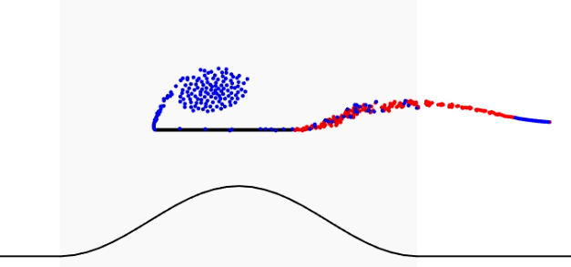

Discrete vortex model
This code is developed to simulated wings undergoing unsteady pitch maneuvers during transverse gust-encounters.
Discrete vortex models are computationally low cost tools that rely on potential flow modeling to study the aerodynamics of wings. The steady panel method that have been historically used in aircraft design is a class of these methods. Unsteady discrete vortex models can be used to study flow physics of wings undergoing unsteady kinematic maneuvers or unsteady flow conditions. In this work, I developed an unsteady discrete vortex model to study the aerodynamics of wing-gust encounters and the effect of wing pitching on gust mitigation.
The video below shows a wing encountering a sine-squared gust. The top left case shows the wing encountering the gust without any control manuever. The rest of the cases show the wing encountering the gust with three different pitch maneuvers that aim to mitigate the tranient lift that results from the encounter.
Papers:
Sedky, G., Lagor, F. D., & Jones, A. (2020). Unsteady aerodynamics of lift regulation during a transverse gust encounter. Physical Review Fluids, 5(7), 074701.
Sedky, G., Lagor, F., & Jones, A. R. (2020). The unsteady aerodynamics of a transverse wing-gust encounter with closed-loop pitch control. In AIAA Scitech 2020 Forum (p. 1056).